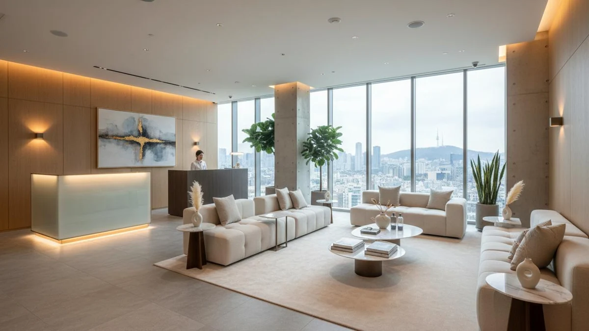

韓國診所媒合
依客群、地區及諮詢需求整理院所資訊，協助確認合適的聯繫方向。
SKINBRIDGE · FOR BUSINESS PARTNERS
YOUR KOREAN MEDICAL AESTHETIC
BUSINESS PARTNER
SKINBRIDGE 致力於連結韓國醫療美容診所與海外合作夥伴，提供診所媒合、預約協調、中文溝通及行銷合作支援。
MORE
BEAUTY
OPPORTUNITIES
TOGETHER
OUR PARTNERS
以您的業務為起點，
一起找到合適的合作方式。

旅行、美容與內容製作圖片為 AI 情境示意；醫療機構圖片為提供的空間視覺參考，不代表已參與本 B2B 方案。
依客群、訪韓日期與停留時間，討論院所諮詢時段及行程銜接。團體人數、交通與現場支援須個別確認；醫療項目及適合性由院所評估。
協助整理顧客希望了解的療程與費用問題，建立韓國院所的諮詢聯繫方式。店家服務與醫療診療分別提供，不承諾療效或特定療程。
討論台灣市場的內容方向、素材需求及合作形式。發布前確認素材使用授權、合作揭露與院所審核，不以未經證實的效果或心得進行宣傳。
從可公開的服務資訊、預約規則與語言需求開始，協議海外溝通及行銷流程。實際服務、醫療判斷、收費與接診安排以院所確認為準。
OUR SERVICES
依需求組合服務，
在開始前說清楚細節。
依客群、地區及諮詢需求整理院所資訊，協助確認合適的聯繫方向。
協調希望日期、時段及預約條件。最終預約以院所回覆為準。
協助日常聯繫及資訊整理；口譯形式、到院支援與費用另行確認。
討論台灣市場內容企劃、素材協作與活動安排，確認授權與審核流程。
依合作條件安排。人數、到院分流、交通及可提供的支援須事前協議。
02 / THE BRIDGE BETWEEN
Rooted in Korea.
Connected to you.
SKINBRIDGE 以韓國醫療機構與海外客群之間的溝通為核心，協助合作夥伴整理需求、理解院所資訊，並協調後續聯繫。
從海外市場的內容規劃、中文溝通，到預約與到院安排，我們重視服務邊界、資訊透明與雙方共識。支援項目、服務語言、現場人力及費用，皆於合作前確認。
認識 SKINBRIDGE ↗04 / A CLEAR WAY FORWARD
認識您的業務、客群
與合作方向。
釐清地區、時程、服務
及溝通需求。
確認分工、費用、結算
及服務條件。
雙方確認合作內容後，
依約定流程展開。
05 / KOREA, IN CONNECTION
以公開院所資料為起點，討論皮膚管理及醫療美容相關的諮詢需求。可媒合院所與服務內容，依當次需求及院所確認為準。
可參考既有首爾院所介紹，進一步確認預約、語言支援及合作可行性。
可提出濟州地區需求；目前本頁沒有已確認可公開的合作院所名單，須個別評估。
本頁不代表任何院所已簽訂 B2B 合作。非公開價格、佣金與合約內容不在此公開。
06 / BEFORE WE BEGIN
歡迎旅行社、美容院、皮膚管理中心、KOL、MCN、行銷公司及醫療機構提出需求。實際合作形式依業務性質與雙方確認的條件安排。
可洽談預約協調服務；日期、項目、費用及取消規則須經院所確認。提出需求不等於完成預約。
依服務範圍、分工與合作形式個別協議，並於正式合作前確認書面條件。本頁不提供統一佣金或保證收益。
可先提供預計人數、日期、地區與支援需求，再評估院所容量及行程可行性。交通、現場人力與其他服務需另外確認。
中文聯繫與現場口譯屬不同服務；可提供的日期、語言、時數及費用需事前確認，不保證每間院所皆有中文人員。
不需要。企業合作洽詢僅需提供公司資訊與合作需求，請勿傳送患者病歷、健康資訊、護照或其他敏感資料。
LET’S START A CONVERSATION
選擇您習慣的平台，直接與我們聊聊。
好的合作，從一場清楚的對話開始。
歡迎告訴我們您的公司名稱、業務類型與合作想法。
開啟平台後，請自行傳送訊息。
請勿傳送患者病歷、健康資訊或護照資料。